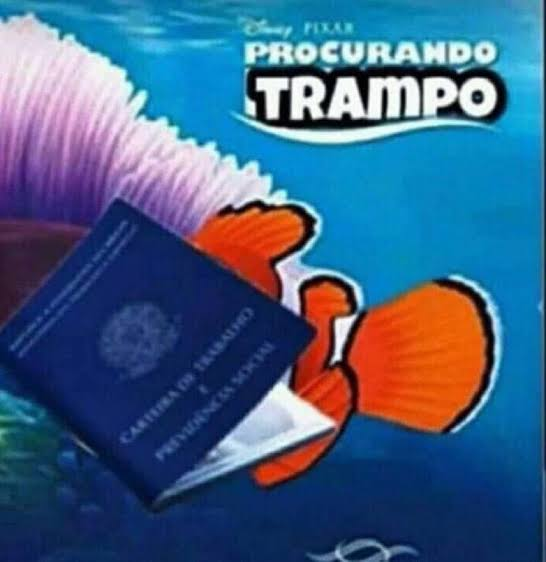
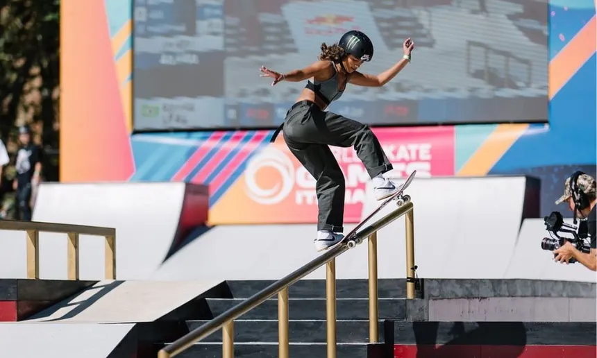
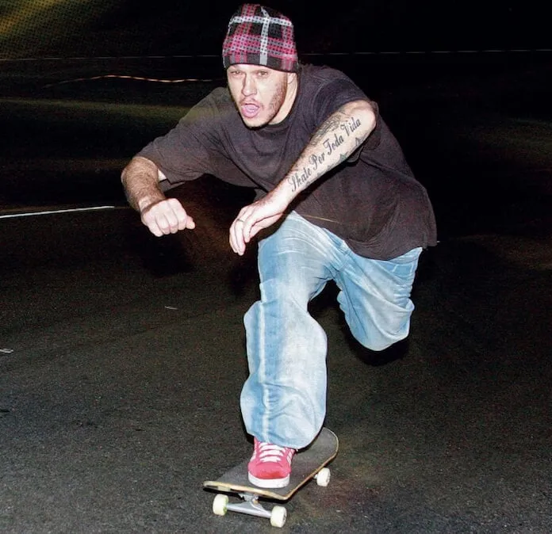
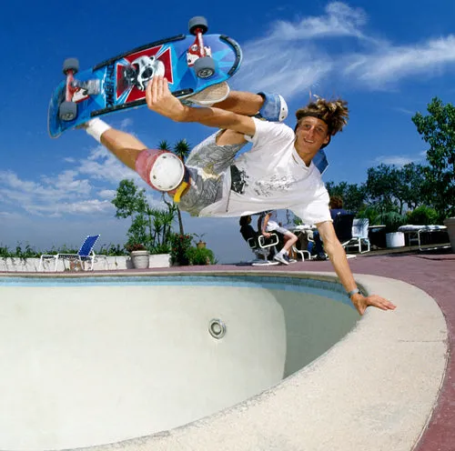
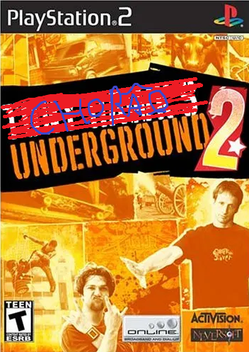

RECUSANDO O CRIME
Situação atual
Você analisa a proposta do Senhor Branco, mas não lhe convêm. Portanto, agora você está distribuindo curriculo pela cidade a procura de um trabalho legal, sem riscos de cadeia. Então, você observa um grupo de skatistas disputando camepeonato. Você deseja olhar?
TORNEIO FORTE
Ao chegar no local do campeonato, você percebe que há nomes conhecidos disputando. Rayssa Leal, Dora Varella, Luiz Francisco e Kelvin Hoefler estão no meio. Motivado pela dificuldade, você espera o torneio acabar e possui a oportunidade de desafiar Rayssa para uma disputa de manobras.
DESESPERO
Você está desesperado por dinheiro e aceita um emprego no supermercado na escala 6x1. Está feliz com isso?
Uma opção também...
Você não procura emprego e nem desafios na sua vida. Você vira desempregado e perde totalmente a vontade de viver.
Começo de um sonho
Você desafia Rayssa e realiza manobras surpreedentes que foram capazes de deixar todos boquiaberto. Com isso, Chorão que estava observando tudo, chega em você e começa a te dizer que não existem dias de glória, e sim apenas de luta. Determinado a provar o contrário, você discorda, e o vocalista bate seu skate contra o chão com uma força violenta. Ouvindo um barulho no meio da pista, você observa que uma passagem subterrânea se abriu com escadarias. Você decide entrar.
O último teste
Ao descer as escadas, você se depara com um HALF PIPE, e uma pessoa virado de costas na parte mais elevada da rampa. Ela vira lentamente em sua direção e diz: "Finalmente, estava esperando por você". É nada mais, ninguém menos que TONY HAWK.
VOCÊ SE TORNA A LENDA DO SKATE
Você derrota TONY HAWK e agora se tornou a lenda do Skate. Porém, como você é humilde, dá os creditos ao Chorão por ter te motivado ao longo da sua trajetória, e suplica a criação do CHORÃO UNDERGROUND para playstation 6, afim de homenager a verdadeira lenda.